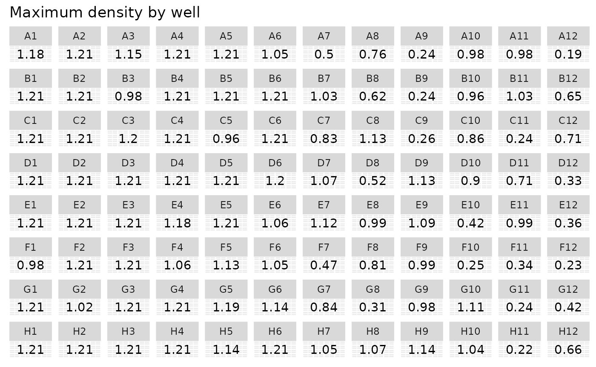

Getting started
gcplyr is a package that implements a number of
functions to make it easier to import, manipulate, and analyze microbial
growth from data collected in multiwell plate readers (“growth curves”).
Without gcplyr, importing and analyzing plate reader data
can be a complicated process that has to be tailored for each
experiment, requiring many lines of code. With gcplyr many
of those steps are now just a single line of code.
This document gives an introduction of how to use gcplyr
for each step of a growth curve analysis.
To get started, you need your growth curve data file saved to your
computer (.csv, .xls, .xlsx, or any other format that can be read by
read.table).
Users often want to combine their data with some information on the
experimental design of their plate(s). You can save this information
into a tabular file as well, or you can just keep it handy to enter
directly in R (see
vignette("gc03_incorporate_designs")).
Let’s get started by loading gcplyr. We’re also going to
load a couple other packages we’ll need.
library(gcplyr)
#> ##
#> ## gcplyr (Version 1.10.0, Build Date: 2024-07-09)
#> ## See http://github.com/mikeblazanin/gcplyr for additional documentation
#> ## Please cite software as:
#> ## Blazanin, Michael. gcplyr: an R package for microbial growth
#> ## curve data analysis. BMC Bioinformatics 25, 232 (2024).
#> ## https://doi.org/10.1186/s12859-024-05817-3
#> ##
library(dplyr)
#>
#> Attaching package: 'dplyr'
#> The following objects are masked from 'package:stats':
#>
#> filter, lag
#> The following objects are masked from 'package:base':
#>
#> intersect, setdiff, setequal, union
library(ggplot2)A quick demo of gcplyr
Before digging into the details, here’s a simple demonstration of
what a final gcplyr script can look like. This script:
- imports data from files created by a plate reader
- combines it with design files created by the user
- calculates the lag time, maximum growth rate, maximum density, and area-under-the-curve
Don’t worry about understanding all the details of how the code works right now. Each of these steps is explained in depth in later articles.
#For the purposes of this demo, we have to create our example data and
# design files. Normally, the data file would be created by a plate reader, and
# the design file would be created by you, the user
#Generate our example data file, widedata.csv
make_example(vignette = 1, example = 1)
#> Files have been written
#> [1] "./widedata.csv"
#Generate our example design files, Bacteria_strain.csv and Phage.csv
make_example(vignette = 1, example = 2)
#> Files have been written
#> [1] "./Bacteria_strain.csv" "./Phage.csv"
# Read in our data
data_wide <- read_wides(files = "widedata.csv")
# Transform our data to be tidy-shaped
data_tidy <-
trans_wide_to_tidy(wides = data_wide, id_cols = c("file", "Time"))
# Convert our time into hours
data_tidy$Time <- as.numeric(data_tidy$Time)/3600
# Import our designs
designs <- import_blockdesigns(files = c("Bacteria_strain.csv", "Phage.csv"))
#> Inferred 'into' column names as: Bacteria_strain, Phage
# Merge our designs and data
data_merged <- merge_dfs(data_tidy, designs)
#> Joining with `by = join_by(Well)`
#Set up the Well column so they plot in the correct order
data_merged$Well <-
factor(data_merged$Well,
levels = paste0(rep(LETTERS[1:8], each = 12), 1:12))
#Plot the data
ggplot(data = data_merged, aes(x = Time, y = Measurements)) +
geom_line() +
facet_wrap(~Well, nrow = 8, ncol = 12)
# Voila! 8 lines of code and all your data is imported & plotted!
# Calculate the per-capita growth rate over time in each well
data_merged <- mutate(
group_by(data_merged, Well),
percap_deriv = calc_deriv(y = Measurements, x = Time, percapita = TRUE,
blank = 0, window_width_n = 5))
# Calculate four common metrics of bacterial growth:
# the lag time, saving it to a column named lag_time
# the maximum growth rate, saving it to a column named max_percap
# the maximum density, saving it to a column named max_dens
# the area-under-the-curve, saving it to a column named 'auc'
data_sum <- summarize(
group_by(data_merged, Well, Bacteria_strain, Phage),
lag_time = lag_time(x = Time, y = Measurements, deriv = percap_deriv),
max_percap = max(percap_deriv, na.rm = TRUE),
max_dens = max(Measurements),
auc = auc(y = Measurements, x = as.numeric(Time)))
#> `summarise()` has grouped output by 'Well', 'Bacteria_strain'. You can override
#> using the `.groups` argument.
# Print some of the values
head(data_sum)
#> # A tibble: 6 × 7
#> # Groups: Well, Bacteria_strain [6]
#> Well Bacteria_strain Phage lag_time max_percap max_dens auc
#> <fct> <chr> <chr> <dbl> <dbl> <dbl> <dbl>
#> 1 A1 Strain 1 No Phage 2.11 1.00 1.18 15.9
#> 2 A2 Strain 2 No Phage 1.74 1.31 1.21 19.3
#> 3 A3 Strain 3 No Phage 2.14 0.915 1.15 15.1
#> 4 A4 Strain 4 No Phage 1.68 1.43 1.21 20.1
#> 5 A5 Strain 5 No Phage 1.67 1.47 1.21 20.3
#> 6 A6 Strain 6 No Phage 2.41 0.789 1.05 12.8
#Set up the Well column so they plot in the correct order
data_sum$Well <- factor(data_sum$Well,
levels = paste0(rep(LETTERS[1:8], each = 12), 1:12))
#Plot lag time
ggplot(data = data_sum) +
geom_text(aes(label = round(lag_time, 2), x = 1, y = 1)) +
facet_wrap(~ Well, ncol = 12) +
labs(title = "Lag time by well") +
theme(axis.title = element_blank(),
axis.text = element_blank(),
axis.ticks = element_blank())
#Plot growth rate
ggplot(data = data_sum) +
geom_text(aes(label = round(max_percap, 2), x = 1, y = 1)) +
facet_wrap(~ Well, ncol = 12) +
labs(title = "Maximum growth rate by well") +
theme(axis.title = element_blank(),
axis.text = element_blank(),
axis.ticks = element_blank())
#Plot Maximum density
ggplot(data = data_sum) +
geom_text(aes(label = round(max_dens, 2), x = 1, y = 1)) +
facet_wrap(~ Well, ncol = 12) +
labs(title = "Maximum density by well") +
theme(axis.title = element_blank(),
axis.text = element_blank(),
axis.ticks = element_blank())
#Plot AUC
ggplot(data = data_sum) +
geom_text(aes(label = round(auc, 2), x = 1, y = 1)) +
facet_wrap(~ Well, ncol = 12) +
labs(title = "Area under the curve by well") +
theme(axis.title = element_blank(),
axis.text = element_blank(),
axis.ticks = element_blank())What’s next?
In the example here, we’ve shown how each step of a
gcplyr workflow is only one or a few lines of code. In the
following pages, we’ve explained each of these steps in depth. To start,
we’ll learn how to import our data into R and transform it
into a convenient format.
- Introduction:
vignette("gc01_gcplyr") - Importing and reshaping data:
vignette("gc02_import_reshape") - Incorporating experimental designs:
vignette("gc03_incorporate_designs") - Pre-processing and plotting your data:
vignette("gc04_preprocess_plot") - Processing your data:
vignette("gc05_process") - Analyzing your data:
vignette("gc06_analyze") - Dealing with noise:
vignette("gc07_noise") - Best practices and other tips:
vignette("gc08_conclusion") - Working with multiple plates:
vignette("gc09_multiple_plates") - Using make_design to generate experimental designs:
vignette("gc10_using_make_design")